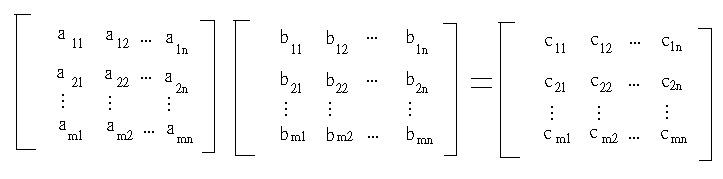
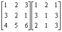
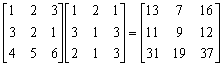

N階矩陣乘法
程式由小雅所編寫
程式提供日期: 2009年9月6日
程式可以計算兩個n階矩陣 (0<n<10)的乘積，更可直接計算答案矩陣中任意一個元素的數值。

註: 這個程式計算範圍較大，程式相對亦較為簡短，輸入數據時亦會同時顯示輸入數據的位置，出現的次序與自行計算時的次序亦相同，但計算兩個簡單矩陣(整個矩陣)乘積時速度會較慢(因為要重複輸入相同數據)。
程式 (99 bytes)
Mem clear: ?→C: 1→X:
Lbl 1: 1+Y→Y: ?→X: ?→Y: MM-:
Lbl 2: 1M+: 10X+M→A: ?→A:
10M+Y→B: ?→B: AB+D→D: C>M => Goto 2:
D◢ 0→D: C>Y => Goto 1: 0→Y: 1+X→X: Goto 1
例題1: 計算下列矩陣的乘積:

按 Prog 1 再按
3 EXE (表示計算三階矩陣)
(顯示1) EXE (顯示1) EXE (表示計算c11)
(顯示A?11,表示要求a11) 1 EXE (顯示B?11,表示要求b11) 1 EXE
(顯示A?12,表示要求a12) 2 EXE (顯示B?21,表示要求b21) 3 EXE
(顯示A?13,表示要求a13) 3 EXE (顯示B?31,表示要求b31) 2 EXE
(顯示答案13) EXE
(顯示1) EXE (顯示1) EXE (表示計算c12)
(顯示A?11,表示要求a11) 1 EXE (顯示B?12,表示要求b11) 2 EXE
(顯示A?12,表示要求a12) 2 EXE (顯示B?22,表示要求b21) 1 EXE
(顯示A?13,表示要求a13) 3 EXE (顯示B?32,表示要求b31) 1 EXE
(顯示答案7) EXE ........
重覆以上步驟，直至計算完成，完結後按AC終止程式
所以答案為

例題2: 計算下列矩陣的乘積中C22的數值。
按 Prog 1 再按
3 EXE (表示計算三階矩陣)
(顯示1) 2 EXE (顯示1) 2 EXE (表示計算c22)
(顯示A?21,表示要求a21) 3 EXE (顯示B?12,表示要求b12) 2 EXE
(顯示A?22,表示要求a22) 2 EXE (顯示B?22,表示要求b22) 1 EXE
(顯示A?23,表示要求a23) 1 EXE (顯示B?32,表示要求b32) 1 EXE
(顯示答案9)
計算完結後按 AC 終止程式。